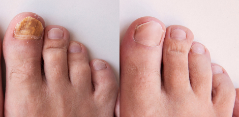
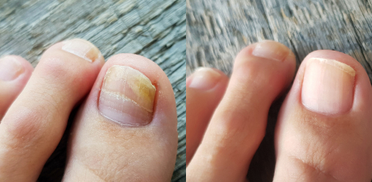

SIKERTERMÉK a bőrgomba ellen: „Vége a szégyenkezésnek! Csak egyszer kell használni és vége a problémának! Akkor is működik, ha minden más kudarcot vallott.”

Fórumunkat elárasztotta a bejegyzések hulláma: mindenki a láb- és körömgomba kezelésének új módszeréről beszél. Az olvasók a kezelés eredményeivel büszkélkednek, amit egy természetes készítmény segítségével értek el. A kezelés képes 14 nap alatt egyszer és mindenkorra megszüntetni bármilyen típusú körömgombát: dermatofiták, élesztőgombák, penészgombák.
Még azok esetében is működött, akiknél korábban minden hatástalannak bizonyult, akik korábban hosszan tartó gyógyszeres, valamint drága lézeres kezelésen estek át – ma már büszkén mutogatják meggyógyult és szép körmeiket, gombás fertőzések nyoma nélkül. A készítmény olyan embereknél is hatásosnak bizonyult, akik a mélyre ható gombás elváltozásaik miatt körömeltávolító műtétre jelentkeztek be.
A készítményt könnyű felvinni, ráadásul ezt otthonod kényelmében is megteheted, mivel egy átlagos körömlakkhoz hasonlóan kell használni. És a legjobb az egészben az, hogy a kezelés töredékébe kerül annak, amit szájon át történő tablettákra, kenőcsökre vagy lézeres beavatkozásra költenél. Miből ered a készítmény hihetetlen hatékonysága és mi váltja ki ezeket az elképesztően gyors eredményeket? Hol szerethető be pénzügyi támogatással? Megtudhatod a cikk elolvasásával.
Egy új korszak kezdődött a bőrgyógyászatban
Az új körömgomba elleni készítmény gyorsan elnyerte Európa-szerte a szakemberek elismerését. Ennek oka, hogy néhány nap alatt eltávolítja a gombás fertőzést, és ezzel együtt a kellemetlen szagot, viszketést és fájdalmat. Ezután visszafordítja a gomba jelenlétének hatásait, mint például a körömvastagodást, a deformációt, a rétegek szétválását és a körmök töredezését.
Mindössze 14 nap alatt visszaadja a körmök egészséges színét, formáját és szerkezetét. És mindenekelőtt megszabadít a gomba okozta szégyentől, kényelmetlenségtől és korlátoktól. A használatának nincs mellékhatása, mivel a készítmény 100%-ban természetes összetételű. Sőt, a hatás tartós, és nem múlik el azonnal használatának befejezése után.
ÍME NÉHÁNY VÉLEMÉNY AZOKTÓL, AKIK MÁR ÁTESTEK A KEZELÉSEN:
„Nem akarta megfogni a kezem. Most már kézen is csókol!”
Eliza azt mondja, hogy a kezén lévő körömgomba miatt minden randevúja kudarcba fulladt. Ma boldog párkapcsolatban él és az esküvőjét tervezi:
Szörnyű komplexusaim voltak a körmeimen eluralkodó gomba miatt. A férfiak figyeljenek ezekre a dolgokra. Senki nem akart elhívni egy második randevúra...
Végül mellém állt a szerencse, Martinnal egymásba szerettünk. De nem akarta megfogni a kezemet. Próbált nem ránézni a kezemre. Kapcsolatunk első fél éve alatt nem találkoztam sem a barátaival, sem a családjával, nem akart bemutatni nekik...
Használtam ezt a kezelést és a gomba 2 nap múlva kezdett eltűnni! A körmeim már nem sárgák, nem deformálódnak és nem is töredeznek. Egyszerűen egészségesek és szépek. Martin már nem undorodik a kezemtől. Most már kézen is csókol! És a legjobb az egészben: eljegyeztük egymást!!! ~Eliza, 36 éves
„Már nem kell attól tartanom, hogy az emberek undorodnak tőlem”
György azt mondja, hogy nagy megkönnyebbülést érzett, mert az emberekkel való érintkezés többé nem okoz számára kellemetlenséget:
A lábkörmeim iszonyatos szagúak voltak és furcsa kinövések voltak rajtuk. A helyzet a kézfejemen sem volt sokkal jobb. A pénztárosok az üzletben undorodva vették el tőlem a készpénzt.
„Ne menj közel ahhoz a férfihoz, még megfertőz – így szóltak az anyukák a gyerekekhez a játszótéren, amikor az unokáimat vittem oda. Míg végül nem engedték, hogy hozzájuk érjek, a gyerekek sírtak, amikor a karjaimba akartam venni őket. De ami a legrosszabb, hogy tényleg fertőző! Veszélyt jelentettem a saját unokáimra!

Ma ez már csak egy kellemetlen emlék a múltból. A gomba megszűnt, és milyen egyszerű volt! Habozás nélkül kezet foghatok a szomszédommal, és játszhatok az unokáimmal, mert már nem néznek undorral a kezemre. Nyaraláskor nem kell dörzsölni a lábfejem zárt cipőben, mivel most már járhatok papucsban is – nincs többé az a bűz sem! A megkönnyebbülés leírhatatlan. ~György, 65 éves
„Végre elmehetek kozmetikushoz!”
Orsolya is megszabadult a bőrgombától – 5 év gyötrelem után. Ez a kellemetlen betegség végül többé nem szab neki korlátokat:
A személyzet kikergetett a medencéből, mert az emberek ordítozni kezdtek, hogy terjesztem a gombát. Mindenki úgy nézett rám, mint egy leprásra. Életem legnagyobb megaláztatása volt! De nincs jogom panaszkodni. Én is a strandon kaptam el. Ráadásul el kellett felejtenem, hogy pedikűrre vagy gyógyfürdőkbe járjak. Tragédia! Semmi sem segített. Még a lézer sem működött, pedig 120 000 Ft-ot fizettem!!!
Erre tessék! 2 hét után megszabadultam a gombától, újra nőnek érzem magam, végre megfelelően ápolhatom a lábfejem. Uszodába, kozmetikushoz, SPA-ba járok. Végre nem kell állandóan elrejtenem a lábam a világ elől. ~Orsolya, 45 éves
Ezt a felfedezést egy magyar nő érte el
A kezelés, amely reménytelen esetekben is sikeresen felveszi a harcot a körömgombával, a Dr. Merritz-Almási Mária által feltalált mikoszpetikus bioaktivátor. A doktornő egy világszerte elismert magyar tudós, aki 20 éve Zürichben (Svájc) él és dolgozik.
Honfitársunk már több kutatási sikert ért el. Ezúttal olyan tudósokat hozott zavarba, akik évek óta foglalkoznak bőrgyógyászati problémákkal. Egy átfogó gyógymódot talált fel a körömgomba ellen, amellyel az orvostudomány eddig nem tudott megbirkózni.
A szakemberek dicsérik
„A körömgombásodásban szenvedőknek eddig nem sok esélyük volt arra, hogy megszabaduljanak a problémától. Ha egyszer megfertőződött az ember, még a látszólagos gyógyulás ellenére is visszaeshetünk.
Ezenkívül gyógyszeres kezelés esetén hosszú távon kell tablettákat szedni. Régóta köztudott, hogy a vegyszerek szedése tönkreteszi a májat és az emésztőrendszert, anélkül, hogy garanciát adna a körömgomba csillapítására. Akárcsak a lézeres kezelés, amelynek ára iszonyatosan magas.
A fertőzések gyakran vegyesek. Ezért az egyik gomba gyógyszeres leküzdésével a másik dupla erősséggel növekszik. A Dr. Merritz-Almási Mária által feltalált mikoszeptikus bioaktivátor áttörést jelent ezen a területen, mert ez az első módszer, amely alaposan felveszi a harcot mind a 3 gombafajtával: a dermatofitákkal, az élesztőgombákkal és a penészgombákkal egyaránt.
Ennek köszönhetően mindenki, aki használja, végleg megszabadul a körömgombától. Ráadásul ez a kezelés 100%-ban természetes és biztonságos a szervezet számára, ami nem mondható el sem a tablettákról, sem a lézerről. És végül – a Dr. Merritz-Almási által feltalált kezelés lenyűgözően gyors eredményeket ad.
Összefoglalva, a mikoszeptikus bioaktivátor páratlan a bármilyen eredetű és súlyosságú körömgomba kezelésében.”
Erőteljes hatás, a lehető legnagyobb hatékonyság
Dr. Merritz-Almási Mária mikroszeptikus bioaktivátorát 12 laboratórium tesztelte szerte a világon. A vizsgálatokon 70 000 körömgombásodásban szenvedő ember vett részt. Minden kutatás kétséget kizáróan megerősítette, hogy a kezelés:
A körmöket és a bőrt megtámadó gombák 100%-át elpusztítja
Mindössze 2 nap alatt elkezdi eltávolítani a körömgombák mindhárom típusának sejtjeit: a dermatofitákat, az élesztőgombákat és a penészgombákat.
Megfosztja a gombákat a növekvésükhöz szükséges feltételektől
Felszívja a körmök körül lévő nedvességet, ami által a gombák terjedése lehetetlenné válik. A szárított körömszövetekben pedig megköti a regenerációjukhoz és az egészséges megjelenés helyreállításához szükséges nedvességet.
Javítja a vérkeringést
Javítja a köröm körüli vérkeringést, felgyorsítja a fertőzések eltávolítását és megkönnyíti az egészséges köröm helyreállításához szükséges tápanyagok szállítását.
Regenerálja a körmöket
Erősíti, táplálja és újjáépíti a gombásodás által károsodott körmöket. Visszaadja rugalmasságukat, megfelelő formájukat, színüket és szerkezetüket.
Felgyorsítja az egészséges körmök növekedését
Serkenti a körömsejtek, azaz a keratinociták növekedését és ellátja a körömlemezt kalciummal, cinkkel, valamint B-vitaminnal, aminek köszönhetően gyorsan egészséges körmök kezdenek nőni.
Megvédi a körmöket a sérülésektől és a kórokozóktól
A vérkeringés javítása, a tápanyagellátás növelése és a körömlemez erősítése által megvédi a körmöket a töredezéstől, a szétválástól és a gombák újbóli megjelenésétől.
Ennek az átfogó hatásnak köszönhetően a mikoszeptikus bioaktivátor 14 nap alatt megszabadít a körömgombától, és ezzel együtt a kellemetlen szagtól, viszketéstől és fájdalomtól. Megszünteti a deformációt és a törékenységet. Visszaállítja a körmök egészséges és esztétikus megjelenését és színét.
A kezelés végleg megszabadít a gomba okozta kényelmetlenségtől, a szégyenérzettől. Ahhoz, hogy ezt a hatást elérd, nem kell mást tenned, mint befesteni a körmödet a mikoszeptikus bioaktivátorral – akárcsak egy közönséges körömlakk esetében.
A pénzvisszatérítés keretei magyarok számára
Dr. Merritz-Almási Mária, gratulálunk tudományos sikeréhez, továbbá sok sikert kívánunk további munkájához!
Viszont nektek, Kedves Olvasók, megadjuk a linket, amely a hivatalos honlapra vezet. Ott a doktornő részletesen kifejti a mikroszeptikus bioaktivátorral végzett kezelés működését. Ezen az oldalon nagy összegű pénzügyi támogatással rendelhetitek meg a kezelést, az akció a nap végéig tart .
Ajánlat (egészen):
akkor is használhatjuk ezt a terméket, ha egy hónap eltelt a lézeres kezelés óta, ami nem vált be?
Megmentette az esküvőmet. Azt hittem belehalok a szégyenbe, hogy ilyen undorító gomba van a lábamon. Köztudott, hogy az esküvő a legfontosabb nap egy nő életében, és még manikűröztetni sem tudtam volna!!!!!! Csak egy hetem volt, egy hét mégis elég volt ezzel a kezeléssel, hogy szép legyen a körmöm az esküvőre. CSODÁLATOS!
Kedves barátaim, én is teszteltem és jó szívvel ajánlom. Reménytelen volt a helyzetem, 6 szakember is a lábkörmeim eltávolítását javasolta. Ez a módszer volt az utolsó lehetőségem volt, és tessék, a körmöm olyan, mint az új:
Szuper. Pont a körömgomba ellen keresek valamit, mert a gyógyszertárból származó kenőcsök nem segítettek.
Emberek, ne menjetek lézeres kezelésre! Maguk a szakemberek sem szívesen ajánlják, mert alig ad valamicske reményt, és rengeteg pénzt kell elkölteni, aztán meg kiderül, hogy a semmire!!!
Megfertőztem a feleségemet ezzel a gombával és már egy hete nem szól hozzám. Megrendelem, meglátjuk, mennyit ér?
Nehéz volt elhinnem, hogy tényleg ilyen csodákra képes. Kipróbáltam magamon, és tessék, előtte-utána 12 nap különbséggel. Ez a termék egyszerűen hihetetlen!!
Jóóóóóóóóóóóóóóóóóó, megrendelem, amíg akciós!